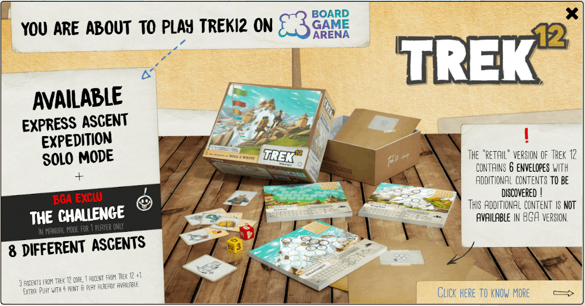

Trektwelve
Board Game Arena 官方规则文档
Express Ascent Gameplay
Two dice are rolled each turn. (Red die: 1-6, Yellow die: 0-5)
Each player may choose a number option to take from those dice, being either the lower value, the higher, the total of the two dice, the difference between them, or their multiplied product.
They write that number in any circle on their sheet, and tick off that option. (Once you've ticked all four boxes for an option, you can't take it any more. See options table top right of game board)
Regular circles can take any number from 0-12. Black-outlined circles are dangerous terrain and can only take numbers from 0-6. No numbers above 12 may be scored. If you're forced to place a number that's too high, a ☹️ must be drawn there instead.
After the first turn, numbers must be written adjacent to existing numbers.
At the end of the game, each numbered circle which does not form part of a line or zone is orphaned and gets a ☹️.
Scoring
- Every line of ascending, connected, consecutive numbers = the highest number in the line, plus 1 point per each other number in the line
- Every zone of 2+ connected, identical numbers = the number from any of its circles, plus 1 point per each other circle in the zone
- Bonuses for both longest line and largest zone = 1 point for 3, 3 points for 4, 6 points for 5, etc. (see scoring table middle of game board)
- Malus = -3 points for each ☹️ on your mountain
Expedition Gameplay
Three different ascents are played sequentially, with a score of total stars earned determined at the end.
Special map rules
Special rules for Jampa from Trek 12 +1:
- You must create a Fixed Line between circles already linked in that manner. There is no constraint when you fill in your first circle.
When you fill in the second circle, it must form a Fixed Line with the first. Otherwise, the circle is considered orphaned and you draw an orphan in the circle.
Special rules for Christmas map:
- Each chain represents a garland. The bonuses of each garland are noted above each Rope Trail and depend on the number of different colored balls in the Rope Trail. The more balls of different colors in your garlands, the more points you will score!
- Zones represent gifts. Each Zone gives a bonus only if that zone has no balls. The bonus is then equal to the value of the Zone in question and is noted in the line below.
- Finally, it's Christmas! So no orphans: each orphan space gives a 5 point penalty.
- The player or players (if simultaneous) who are the first to fill in the box just below the star get a 10 point bonus.
Extra rules for Zen Trek map:
- You MUST start on one of the two sides in one of the three arrowed boxes.
- Each mountain has its own table for choosing the outcome of the dice. You must necessarily fill in the boxes of a mountain with the table specific to that mountain (for example, it is forbidden to fill in a box of the white mountain using the table of the gray mountain). You can very well have passed from one side to the other without having fully completed one of the two, but you must respect the table of corresponding choices.
- Under NO circumstances can the "water" boxes be part of a rope path. A "rope path" or "rope trail" is one consisting of linked consecutive numbers. Rope Path Example: 2-3-4-5 (not same numbers as 3-3-3-3).
Special rules for Containment map:
- Warning, if you place a circle of value higher than 12, you will immediately lose (given a score of -100 points).
- Each orphan circle is worth its value as a negative score.
- The value of the circle which is placed at the entrance is counted negative, unless you connect it, using a fixed line, to the sink.
- If you connect the refrigerator with the sofa using a fixed line, you score that line twice.
- If there is a zone on the desk, then the desk will score equal to the number of circles in that zone, multiplied by the number in those circles.
Retail version

lumberjacks-studio.com